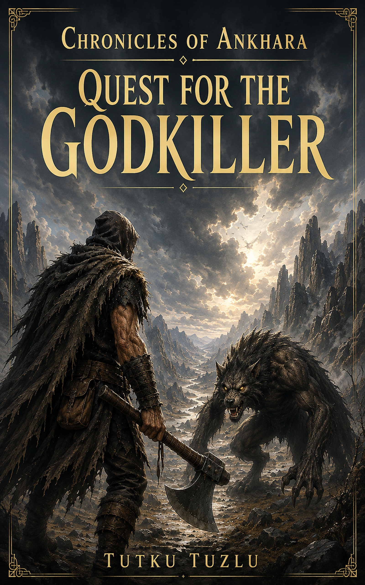

The Five Kingdoms
Earth, Fire, Water, Air, and the One Kingdom each built a different political order around faith, history, and elemental power.

Epic Fantasy Novel
Five kingdoms. Elemental magic. Ancient gods. A legendary weapon that may not be what anyone believes it is.
Five hundred years after the gods abandoned Ankhara, the Five Kingdoms live beneath the weight of old faiths, old rivalries, and a legend powerful enough to change the balance of the world.
Nisha has escaped from a land that should not exist. Tuth is a solitary hunter from the Wilds who wants nothing to do with kingdoms, gods, or their wars. Together they are drawn into a journey across a divided world in search of the legendary Godkiller.
But legends survive by becoming simpler than the truth.
Earth, Fire, Water, Air, and the One Kingdom each built a different political order around faith, history, and elemental power.
Magic is part of Ankhara’s history and religion. The same forces that shaped the world still influence the people living in it.
Beyond the ordered kingdoms live those who never belonged to them — hunters, outcasts, traders, tribes, and people who chose another life.
Some powers were never meant to become kingdoms. Something old is gathering the dead, the altered, and the forgotten.
For five centuries, the Godkiller has survived as myth: the weapon that wounded a god. Kingdoms remember the story differently, but all agree on one thing — if it still exists, whoever finds it could change Ankhara forever.
A silent hunter from the Wilds. He carries an axe, avoids kingdoms, and has no interest in becoming part of anyone’s prophecy.
A young woman fleeing Shadow with more knowledge than she is willing to share. She needs Tuth alive — and moving.